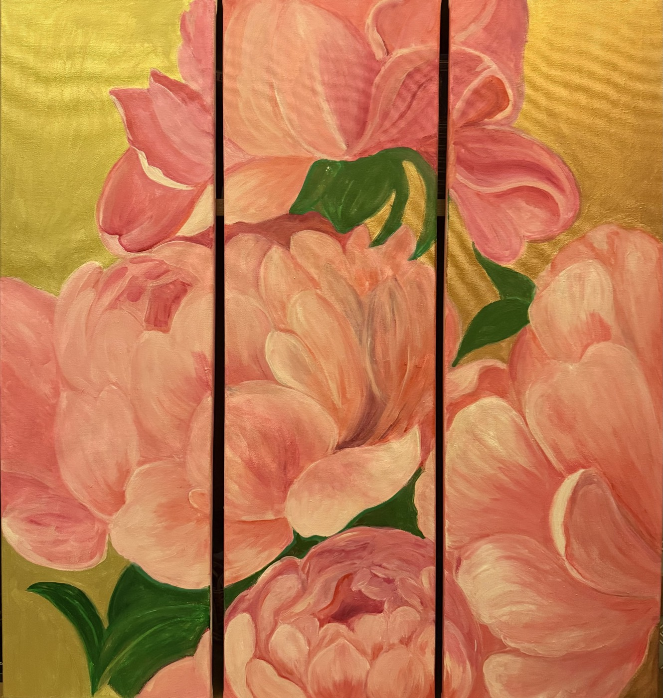
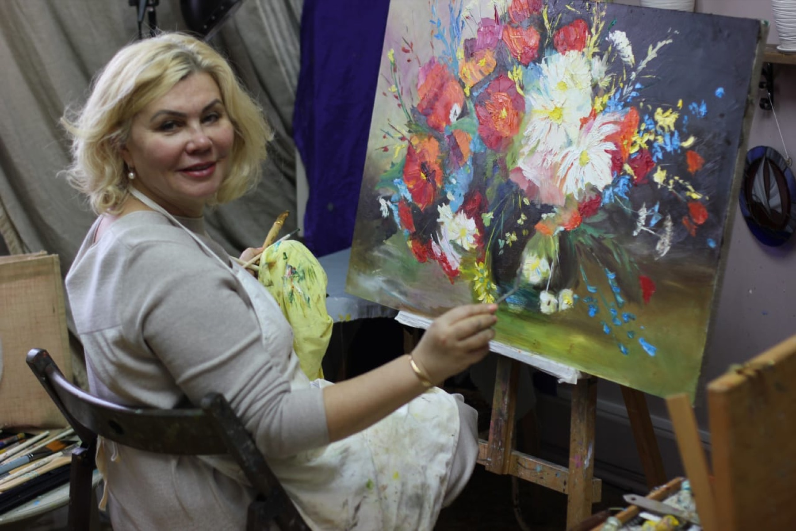
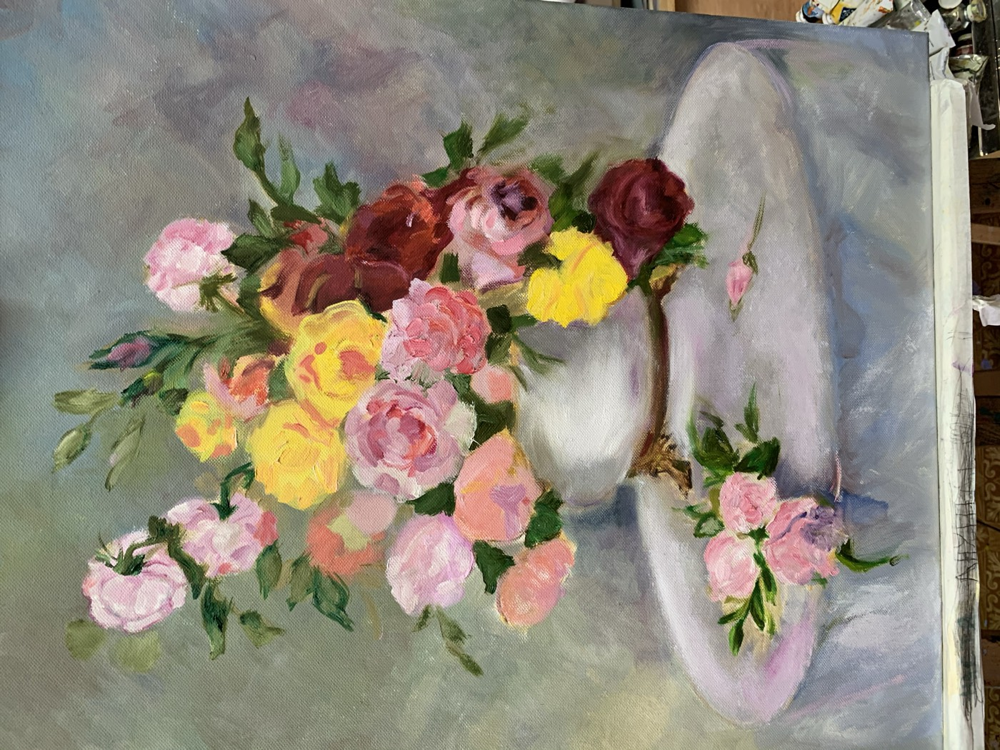
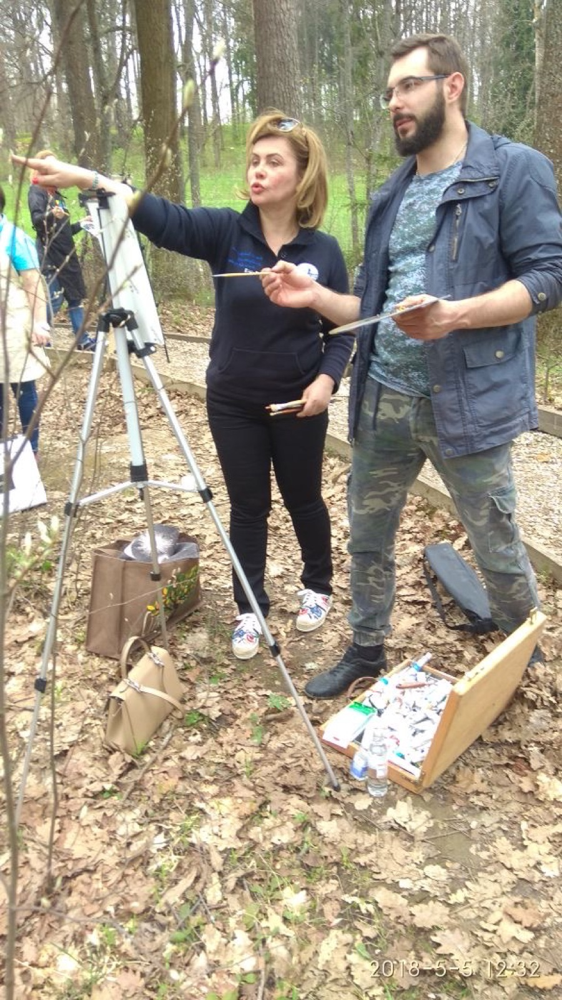
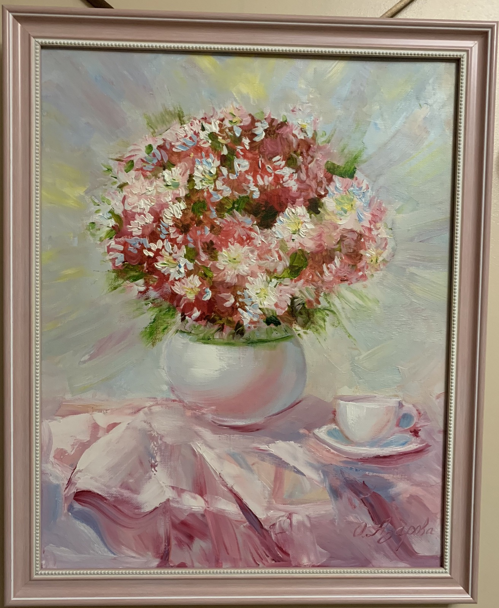
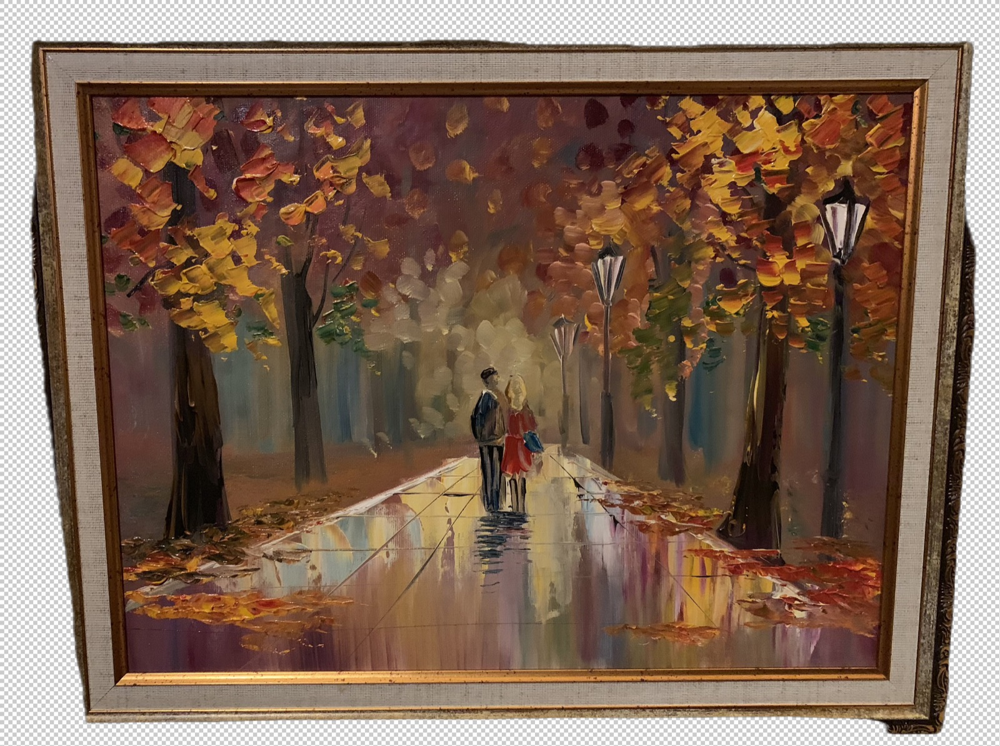

Пионы
Цветочный триптих в тёплой розово-золотистой гамме.
Оксана Азарова исследует цвет, свет и фактуру — от классической живописи до вышивки и смешанных техник.

Пять работ из новой подборки художницы: цветы, животные и выразительные цветовые образы.

Цветочный триптих в тёплой розово-золотистой гамме.

Светлая композиция с розами в мягкой живописной манере.

Лаконичный образ, построенный на тёплых охристых оттенках.

Светлый характерный портрет на глубоком зелёном фоне.

Две фигуры, объединённые цветом, движением и настроением.